-
Аука
Маленький осколок души Хехет в виде небольшой пушистой одноглазой собаки или лисы с несколькми хвостами. По большей части, не представляют опасности для людей, но очень часто воруют и съедают домашних кур. В отличии от вурдалаков обитают не только в Гелиополиссе, но и на Яшене
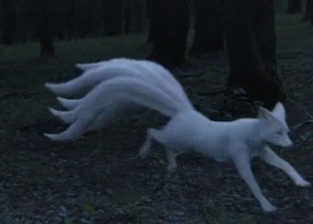
-
Вурдалаки
Осколок души Хехет поселившийся в теле человека. Если человек или животное умирает не с чистым сердцем, близ лежащий осколок притягивается к нему и сливается с его душой, что в итоге приводит к тому что его тело приобретает пугающий вид. Крайне агрессивно относятся к людям. Обычно таких существа уничтожал орден Небесной сойки.
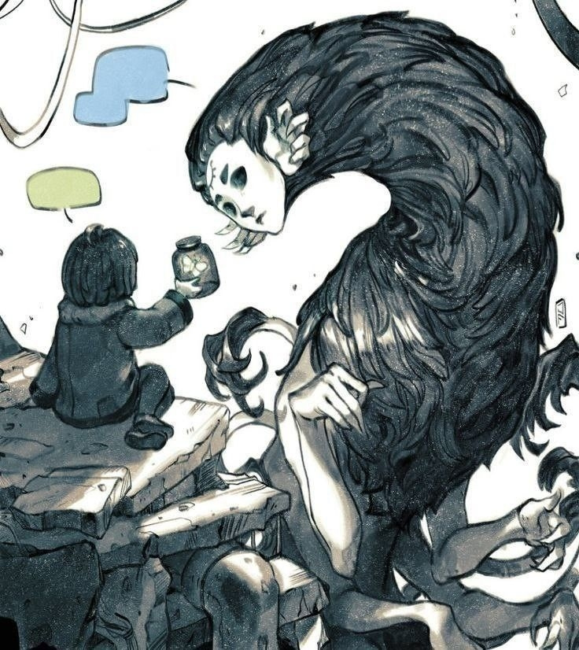
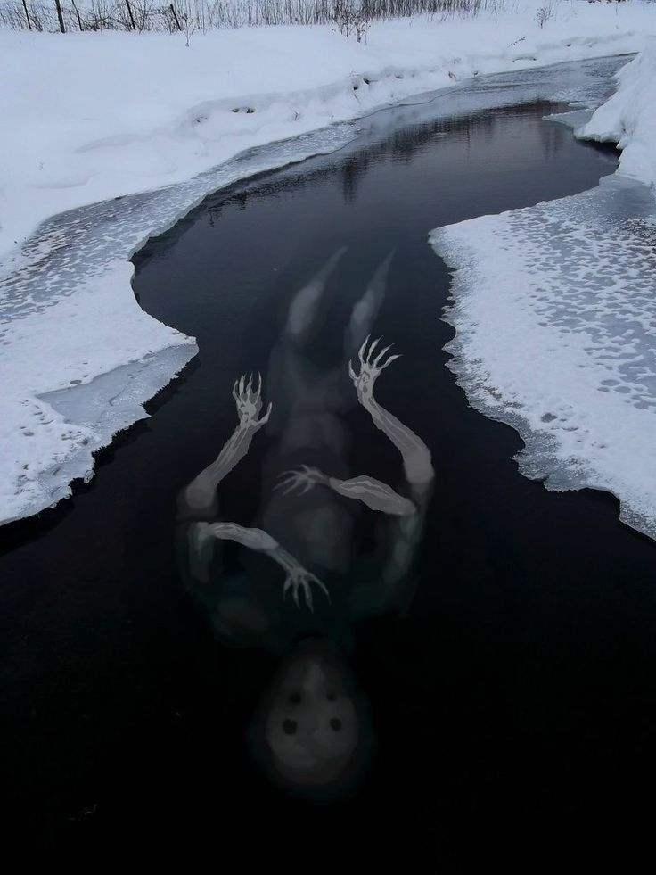
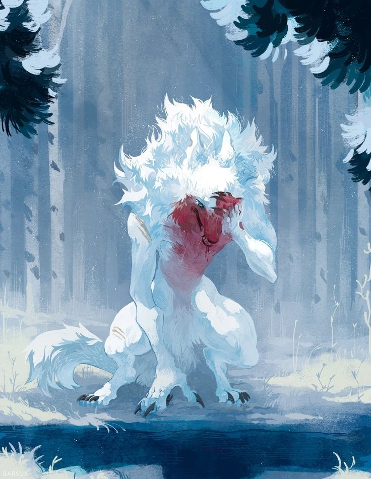
-
Гончий влак
порода волков выведенная Августом. Получились из скрещивания обычного волка и волка-вурдолака. Бессмертны и способны преодолевать огромные расстояния за пару минут. После гибели богов, остался один гончий влак принадлежащий Александру.
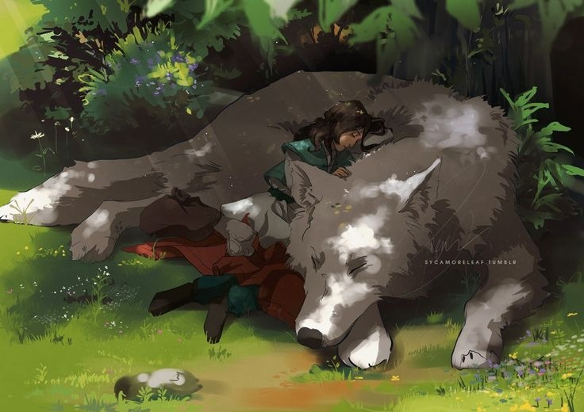
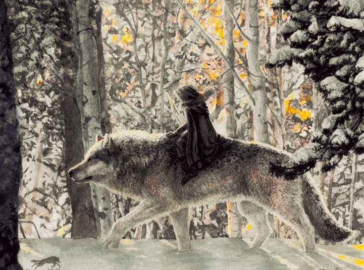
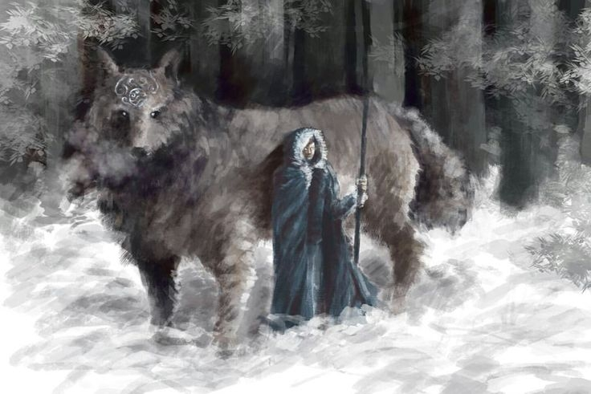
-
Теневой доставщик
Появились благодаря покровительству и благословлению Мэри. Ее незаменимые помошники. Помогают душам найти путь в Эрсель. Способны создавать окна в тенях, телепортироваться через них от отправителя к получателю и обратно
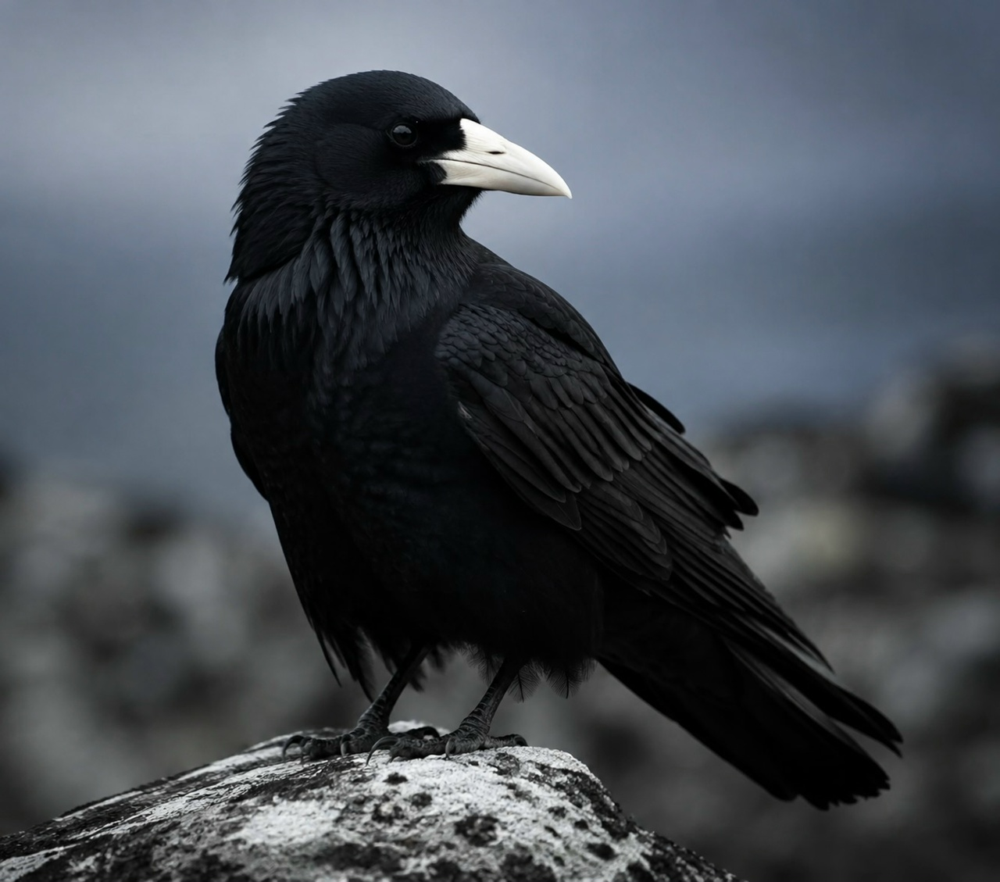
-
Сирины
пугающие марионетки, бывшие защитники Яшена. Были созданы Марленом по подобию вурдалаков.
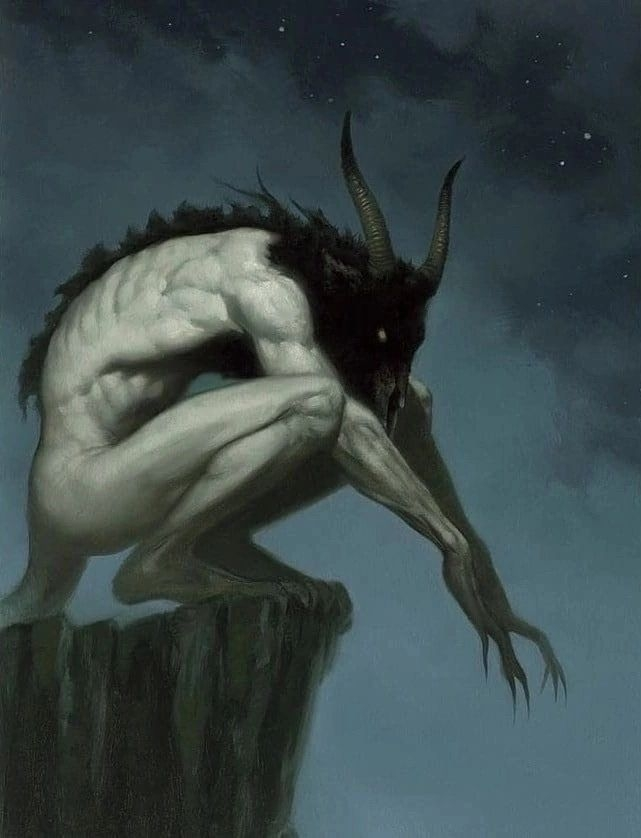
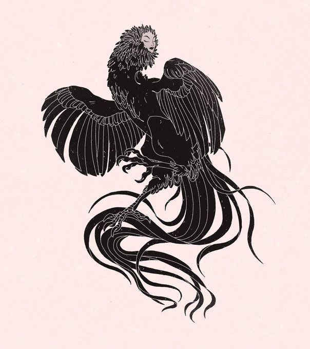
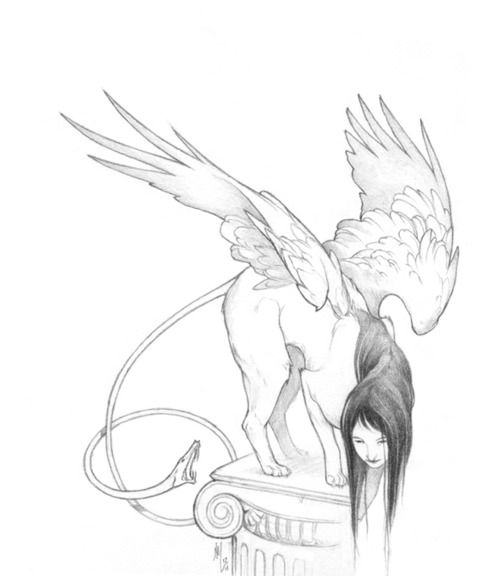